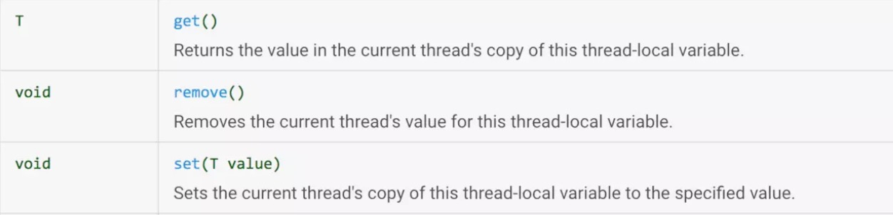
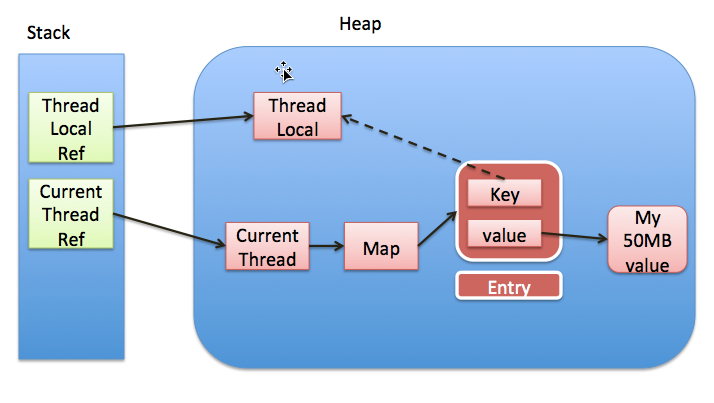

概述
ThreadLocal类用来提供线程内部的局部变量。这种变量在多线程环境下访问(通过get或set方法访问)时能保证各个线程里的变量相对独立于其他线程内的变量。ThreadLocal实例通常来说都是private static类型的，用于关联线程和线程的上下文。
源码解析
ThreadLocal 在很多开源框架中使用的还是比较广泛的，通常使用时都是用set、get、remove还有initialValue。jdk8源码示例如下，李东initialValue方法和get方法可以获得一个获得线程id的方法。get方法线程安全，每个线程都会获得不一样的id编号。
+———————————————————————–+ | private static final AtomicInteger nextId = new AtomicInteger(0); | | | | // Thread local variable containing each thread's ID | | | | private static final ThreadLocal<Integer\ threadId = | | | | new ThreadLocal<Integer() { | | | | \@Override | | | | protected Integer initialValue() { | | | | return nextId.getAndIncrement(); | | | | } | | | | }; | | | | // Returns the current thread's unique ID, assigning it if necessary | | | | public static int get() { | | | | return threadId.get(); | | | | } | +———————————————————————–+
在我们普遍使用过程中，通常会是使用set、get、remove。
{width=”5.768055555555556in” height=”1.3908912948381453in”}
Set方法
+—————————————————————-+ | public void set(T value) { | | | | Thread t = Thread.currentThread(); | | | | //获得一个map，map是当前线程的threadLocals变量 | | | | ThreadLocalMap map = getMap(t); | | | | if (map != null) | | | | //map 的key 是ThreadLocal value是set的值 | | | | map.set(this, value); | | | | else | | | | createMap(t, value); | | | | } | | | | //返回的map是当前线程的threadLocals变量 | | | | ThreadLocalMap getMap(Thread t) { | | | | return t.threadLocals; | | | | } | | | | //new了个ThreadLocalMap，并设置给了当前线程的threadLocals 变量 | | | | void createMap(Thread t, T firstValue) { | | | | t.threadLocals = new ThreadLocalMap(this, firstValue); | | | | } | +—————————————————————-+
可以看出来，当调用ThreadLocal的Set方法的时候，是从当前线程里面拿出了一个Map，也就是每个线程都有自己的Map，所以这个方法是绝对安全的，不涉及到共享数据。而这个map以ThreadLocal这个对象为key，需要set的值为value，set到map里。
也就是这个值存在了每个线程的threadLocals 里，对应的类型为ThreadLocalMap。它是ThreadLocal的一个内部类。而存储使用Entry数组，Entry继承了弱引用，如果有这个key（ThreadLocal）没有外部强引用引用它，在系统GC的时候，Key会被回收，变为null。
+—————————————————————–+ | static class ThreadLocalMap { | | | | static class Entry extends WeakReference<ThreadLocal<?\ { | | | | Object value; | | | | Entry(ThreadLocal<?\ k, Object v) { | | | | super(k); | | | | value = v; | | | | } | | | | } | | | | ThreadLocalMap(ThreadLocal<?\ firstKey, Object firstValue) { | | | | // INITIAL_CAPACITY 为16，指定一个entry数组用于存储 | | | | table = new Entry[INITIAL_CAPACITY]; | | | | int i = firstKey.threadLocalHashCode & (INITIAL_CAPACITY - 1); | | | | table[i] = new Entry(firstKey, firstValue); | | | | size = 1; | | | | setThreshold(INITIAL_CAPACITY); | | | | } | +—————————————————————–+
ThreadLocalMap 的set方法如下：
+————————————————————-+ | private void set(ThreadLocal<?\ key, Object value) { | | | | Entry[] tab = table; | | | | int len = tab.length; | | | | //获得该ThreadLocal的索引位置 | | | | int i = key.threadLocalHashCode & (len-1); | | | | //通过索引位置查找存储的Entry， | | | | for (Entry e = tab[i]; | | | | e != null; | | | | e = tab[i = nextIndex(i, len)]) { | | | | ThreadLocal<?\ k = e.get(); | | | | //Entry的ThreadLocal对象对应上了，就赋值 | | | | if (k == key) { | | | | e.value = value; | | | | return; | | | | } | | | | //key已经是null，说明被回收了， | | | | //该索引Entry没用了，用要保存的键值替换该位置上的 Entry | | | | if (k == null) { | | | | replaceStaleEntry(key, value, i); | | | | return; | | | | } | | | | } | | | | //要存放的索引位置没有 Entry， | | | | //将当前键值作为一个 Entry 保存在该位置 | | | | tab[i] = new Entry(key, value); | | | | int sz = ++size; | | | | //清除一些无效的条目并判断 table 中的条目数是否已经超出阈值 | | | | if (!cleanSomeSlots(i, sz) && sz = threshold) | | | | //扩容两倍 | | | | rehash(); | | | | } | +————————————————————-+
Get方法
+————————————————–+ | public T get() { | | | | Thread t = Thread.currentThread(); | | | | ThreadLocalMap map = getMap(t); | | | | if (map != null) { | | | | //直接调用map的getEntry方法 | | | | ThreadLocalMap.Entry e = map.getEntry(this); | | | | if (e != null) { | | | | \@SuppressWarnings("unchecked") | | | | T result = (T)e.value; | | | | return result; | | | | } | | | | } | | | | //没有则初始化一个,过程类似set可以设置初始值 | | | | return setInitialValue(); | | | | } | | | | private T setInitialValue() { | | | | T value = initialValue(); | | | | Thread t = Thread.currentThread(); | | | | ThreadLocalMap map = getMap(t); | | | | if (map != null) | | | | map.set(this, value); | | | | else | | | | createMap(t, value); | | | | return value; | | | | } | | | | protected T initialValue() { | | | | return null; | | | | } | +————————————————–+
map的getEntry方法
+———————————————————————-+ | private Entry getEntry(ThreadLocal<?\ key) { | | | | int i = key.threadLocalHashCode & (table.length - | | 1); | | | | //通过hash后的值获得entry | | | | Entry e = table[i]; | | | | //因为有hash碰撞的可能，需要比较一下对象 | | | | if (e != null && e.get() == key) | | | | return e; | | | | else | | | | return getEntryAfterMiss(key, i, e); | | | | } | | | | private Entry getEntryAfterMiss(ThreadLocal<?\ key, int i, | | Entry e) { | | | | Entry[] tab = table; | | | | int len = tab.length; | | | | //从i坐标以后循环着找，知道获得null | | | | while (e != null) { | | | | ThreadLocal<?\ k = e.get(); | | | | //能对上就返回 | | | | if (k == key) | | | | return e; | | | | //key为null被GC回收了，清理 | | | | if (k == null) | | | | expungeStaleEntry(i); | | | | else | | | | i = nextIndex(i, len); | | | | e = tab[i]; | | | | } | | | | return null; | | | | } | +———————————————————————-+
Remove方法
+——————————————————+ | public void remove() { | | | | ThreadLocalMap m = getMap(Thread.currentThread()); | | | | if (m != null) | | | | m.remove(this); | | | | } | +——————————————————+
map的remove
+—————————————————-+ | private void remove(ThreadLocal<?\ key) { | | | | Entry[] tab = table; | | | | int len = tab.length; | | | | int i = key.threadLocalHashCode & (len-1); | | | | for (Entry e = tab[i]; | | | | e != null; | | | | e = tab[i = nextIndex(i, len)]) { | | | | //如果key对上了就清除 | | | | if (e.get() == key) { | | | | e.clear(); | | | | expungeStaleEntry(i); | | | | return; | | | | } | | | | } | | | | } | +—————————————————-+
清理方法
expungeStaleEntry是主要的清理方法，里面主要就是将key已经被回收的和需要回收的key和value都设置为null，等待gc回收。
+———————————————————————-+ | private int expungeStaleEntry(int staleSlot) { | | | | Entry[] tab = table; | | | | int len = tab.length; | | | | //值和引用都设置null | | | | tab[staleSlot].value = null; | | | | tab[staleSlot] = null; | | | | size--; | | | | Entry e; | | | | int i; | | | | //找到 | | i坐标后面连续的有值的，因为hash碰撞，相同的hash值会存放在一个坐标， | | 如果有值了就往后排，所以清理的时候也需要向后查找，直到坐标内容为null | | | | for (i = nextIndex(staleSlot, len); | | | | (e = tab[i]) != null; | | | | i = nextIndex(i, len)) { | | | | ThreadLocal<?\ k = e.get(); | | | | //key被gc回收，则把value也回收了 | | | | if (k == null) { | | | | e.value = null; | | | | tab[i] = null; | | | | size--; | | | | } else { | | | | //如果找到entry，计算出他不应该在这个位置，就往后挪， | | | | //并且把这个位置设置为null | | | | int h = k.threadLocalHashCode & (len - 1); | | | | if (h != i) { | | | | tab[i] = null; | | | | while (tab[h] != null) | | | | h = nextIndex(h, len); | | | | tab[h] = e; | | | | } | | | | } | | | | } | | | | return i; | | | | } | +———————————————————————-+
内存泄漏
ThreadLocal的结构如下：
{width=”5.768055555555556in” height=”3.2555555555555555in”}
每个Thread 维护一个 ThreadLocalMap 映射表，这个映射表的 key 是 ThreadLocal 实例本身，value 是真正需要存储的 Object。ThreadLocal 本身并不存储值，它只是作为一个 key 来让线程从 ThreadLocalMap 获取 value。
值得注意的是图中的虚线，表示 ThreadLocalMap 是使用 ThreadLocal 的弱引用作为 Key 的，意味着没有强引用指向 ThreadLocal 变量时，ThreadLocal会在 GC 时被回收。
如果是强引用的话ThreadLocal就不会被回收了，造成了内存泄漏。
由于是弱引用，没有强引用指向ThreadLocal变量了，GC后将ThreadLocal对象回收了，所以key就变成null了，也就没有人访问key为null的entry了，如果线程不销毁那value就无法被GC了。
所以在ThreadLocal中的get、set、remove都根据条件调用了ThreadLocalMap的expungeStaleEntry，用来将key已经成为null的内容清理掉。已经失效的value只能在下一次调用这几个方法的时候才能被清理，所以在结束使用ThreadLocal时，调用remove方法清理。
ThreadLocal使用通常被申明为static，意味着多个相同的对象只会在方法区中存在一份，JDK建议将ThreadLocal变量定义成private static的，这样的话ThreadLocal的生命周期就更长，由于一直存在ThreadLocal的强引用，所以ThreadLocal也就不会被回收，也就能保证任何时候都能根据ThreadLocal的弱引用访问到Entry的value值，然后remove它，防止内存泄露。
生命周期的变成使得操作不当，造成内存泄漏，例如以下示例:
<http://blog.xiaohansong.com/2016/08/09/ThreadLocal-leak-analyze/
调用remove解决。
参考：
<http://blog.xiaohansong.com/2016/08/06/ThreadLocal-memory-leak/
<https://www.zhihu.com/question/35250439
<https://blog.csdn.net/winwill2012/article/details/71625570
例子
<http://blog.xiaohansong.com/2016/08/09/ThreadLocal-leak-analyze/
+———————————————————————-+ | public class MyCounter { | | | | private int count = 0; | | | | public void increment() { | | | | count++; | | | | } | | | | public int getCount() { | | | | return count; | | | | } | | | | } | | | | public class MyThreadLocal extends ThreadLocal<MyCounter\ { | | | | } | | | | public class LeakingServlet extends HttpServlet { | | | | private static MyThreadLocal myThreadLocal = new MyThreadLocal(); | | | | protected void doGet(HttpServletRequest request, | | | | HttpServletResponse response) throws ServletException, IOException { | | | | MyCounter counter = myThreadLocal.get(); | | | | if (counter == null) { | | | | counter = new MyCounter(); | | | | myThreadLocal.set(counter); | | | | } | | | | response.getWriter().println( | | | | "The current thread served this servlet " + counter.getCount() | | | | + " times"); | | | | counter.increment(); | | | | } | | | | } | +———————————————————————-+
在 Tomcat 中，下面的代码都在 webapp 内，会导致WebappClassLoader泄漏，无法被回收。上面的代码中，只要LeakingServlet被调用过一次，且执行它的线程没有停止，就会导致WebappClassLoader泄漏。每次你 reload 一下应用，就会多一份WebappClassLoader实例，最后导致 PermGen OutOfMemoryException。
tomcat请求线程是个线程池，所以当调用完set之后，myThreadLocal就被设置到了线程池的thread里的threadLocalMap变量，而myThreadLocal又是static的。所以类的引用一直存在。所以需要调用remove方法清理myThreadLocal 和Thrad引用。